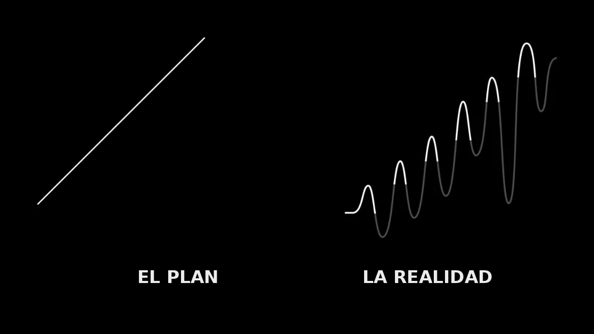

Este curso no trabaja con casos inventados. Hay una presa real, la de La Florida, a minutos del campus. Hay una comunidad que va a decidir qué se hace con su orilla. Y hay un capital semilla para empezar a hacerlo. Durante cuatro meses ustedes van a escuchar, diseñar, conseguir, construir y rendir cuentas, en ese orden, que es el orden en que ocurren las cosas cuando son de verdad.
¿Y esto para qué me sirve?
Pregunta justa, y conviene contestarla antes de empezar, no en diciembre.
Casi todo el dinero que llega al campo llega en forma de proyecto. Los apoyos federales, las concurrencias con el estado, los fondos de fundaciones, la cooperación internacional, hasta el recurso del municipio: nada de eso se entrega porque alguien lo necesite. Se entrega a quien lo solicita bien, en el formato correcto, en la fecha correcta y con la comprobación en regla. Puedes tener la mejor idea de la región y no ver un peso porque no supiste llenar el marco lógico. Pasa todos los días.
Formular es una habilidad que se paga. En cualquier organización del sector, la persona que sabe armar un proyecto y comprobarlo es la que no sobra. No es un talento: es un oficio con reglas, y las reglas se aprenden. Quien sale de aquí sabiendo hacer un presupuesto que cuadra, un cronograma que se sostiene y una solicitud que se entiende, sale con algo que se cotiza.
Algún día vas a estar del otro lado del mostrador. Vas a ser quien dictamine, quien decida a quién sí y a quién no, o quien tenga que decirle a un grupo que su proyecto no era viable. Entender cómo se evalúa un proyecto te sirve para formular mejor, y también para no dejarte deslumbrar por uno que se ve bonito y no se sostiene.
Los proyectos casi nunca fracasan por falta de ideas. Fracasan por razones aburridísimas: un permiso que nadie pidió, un proveedor que no factura, una comunidad a la que nunca se le preguntó, un calendario que ignoraba las lluvias, una comprobación que se juntó en diciembre. Buena parte de este curso consiste en aprender a ver venir esas cosas, que es una forma de respeto por la gente que espera del otro lado.
Y porque preguntar antes de proponer no es obvio. La costumbre del sector es llegar con la solución hecha y buscar a quién aplicársela. Aquí vamos al revés: primero se escucha, y lo que la gente pida es lo que se diseña, aunque no sea lo que tú habrías escogido. Eso cambia la manera de trabajar para toda la vida, y es más incómodo de lo que suena.
Y algo que conviene saber desde hoy: va a salir chueco. El proyecto que diseñen en septiembre no va a ser el que se inaugure en noviembre. Va a haber un proveedor que no cumpla, una lluvia que no estaba en el cronograma, una asamblea que cambie de opinión a media obra. Eso no es que ustedes lo hicieron mal. Es cómo se ven los proyectos cuando son de verdad.

La diferencia entre alguien que gestiona y alguien que se desanima no es que al primero le salgan las cosas a la primera. Es que ya sabe que la línea de la derecha también sube, y que las caídas son parte del dibujo, no la prueba de que se equivocó de camino. Media Unidad 3 de este curso se llama justamente así: qué pasa cuando el plan se topa con la realidad.
A dónde vamos juntos
Cuatro meses. Esto es lo que vas a poder hacer en diciembre y que hoy, seamos honestos, todavía no puedes:
- Diseñar y levantar una consulta comunitaria que sirva para decidir, sin prometer lo que no puedes cumplir y sin inducir la respuesta que te conviene.
- Convertir una petición en un proyecto. Pasar de "queremos que la presa esté bonita" a objetivos, componentes, actividades y una cadena de resultados que se aguanta preguntas.
- Armar un marco lógico y leer el de alguien más para encontrarle el renglón chueco.
- Distinguir un producto de un cambio. Sembrar doscientos árboles es un producto. Que sobrevivan tres años es un cambio. Casi nadie del sector tiene clara esa diferencia y por eso se celebran cosas que no sirvieron.
- Presupuestar de verdad: cotizar, meter lo que siempre se olvida, y explicar en qué se va cada peso sin ponerte nervioso.
- Escribir una solicitud de financiamiento y defenderla frente a un comité que puede decirte que no, y responder por escrito a un fallo sin agarrarlo personal.
- Comprobar el gasto: facturas, libro de cuentas y rendición pública ante la gente cuyo dinero ejerciste. Es la parte que nadie enseña y la que hunde más proyectos.
- Anticipar cómo va a morir tu proyecto antes de que empiece, y hacer algo al respecto.
- Medir si funcionó con indicadores que no mienten, y sostener el número con argumento.
- Hablar en público de lo que hiciste ante comunidad, autoridad y quien financió. Aquí lo que sabes se demuestra hablando, y lo vas a practicar tantas veces que va a dejar de darte miedo.
Al final cada quien sale con su expediente del gestor: la carpeta con todo lo que formuló, gestionó, comprobó y defendió durante el semestre. No es un cuaderno de tareas. Es lo que vas a poder poner sobre la mesa cuando alguien te pregunte qué has hecho.
El semestre de un vistazo
Cuatro unidades, diecisiete semanas de contenido y una Semana 0 de aterrizaje que además es el programa completo del curso.
| Semanas | Unidad y pregunta | Qué sales sabiendo hacer |
|---|---|---|
| 0 | Aterrizaje¿En qué me estoy metiendo? | Entender el encargo, firmar los dos pactos y abrir tu expediente |
| 1 a 4 | U1 · Escuchar la presa¿Qué quiere la gente y cómo se sabe? | Diseñar y levantar una consulta comunitaria, y aguantar que la respuesta no sea la que esperabas |
| 5 a 10 | U2 · Diseñar lo que pidieron¿Cómo se convierte una petición en un proyecto que se sostiene? | Marco lógico, prototipo, presupuesto, cronograma y una solicitud que se defiende |
| 11 a 14 | U3 · Construir en la presa¿Qué pasa cuando el plan se topa con la realidad? | Ejercer recursos, llevar libro de cuentas, responder a un fallo y sacar la obra |
| 15 a 17 | U4 · Entregar la presa viva¿Cómo se sabe que funcionó y quién lo cuida después? | Medir resultados, auditar el gasto y entregar a la comunidad lo que se hizo |
El dinero del curso
El grupo va a ejercer $10,000 de capital semilla. Vale la pena decir con precisión qué es y qué no es, porque de ahí sale la mitad del aprendizaje.
No es el presupuesto del proyecto. Es la contrapartida: el dinero que se pone sobre la mesa para ir a buscar el resto. Así funciona casi todo en el sector, y por eso importa. Un fondo que ya alcanzaba para todo no te enseña a gestionar, te enseña a gastar. Con este, si el proyecto que la comunidad pidió cuesta más, alguien va a tener que salir a conseguir la diferencia, y ese alguien son ustedes.
Es dinero real, con reglas, con comprobantes y con libro de cuentas público. Las reglas se destripan en la semana 5.
Y la calificación, ¿qué?
En este curso ningún trabajo lleva número. Durante el semestre nada se califica con puntos: todo produce retroalimentación y evidencia. El número que la universidad exige lo propones tú al final, con tu expediente enfrente y en una conversación conmigo. No es un regalo, es más exigente que un examen, porque tienes que sostener lo que dices.
Está explicado sin letra chiquita en Tu calificación, y se firma como acuerdo entre los dos en el pacto de evaluación. Si algo no te convence, hay un rato reservado para reclamarlo.
Mapa del curso
Da clic en cualquier bloque para desplegarlo.
Empieza por la Semana 0 El aterrizaje del curso, con sesiones el jueves 30 y el viernes 31 de julio. Qué vas a aprender, en qué orden y para qué te sirve como profesionista del campo.